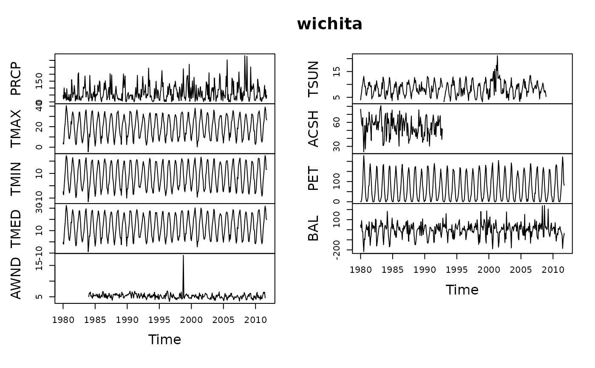
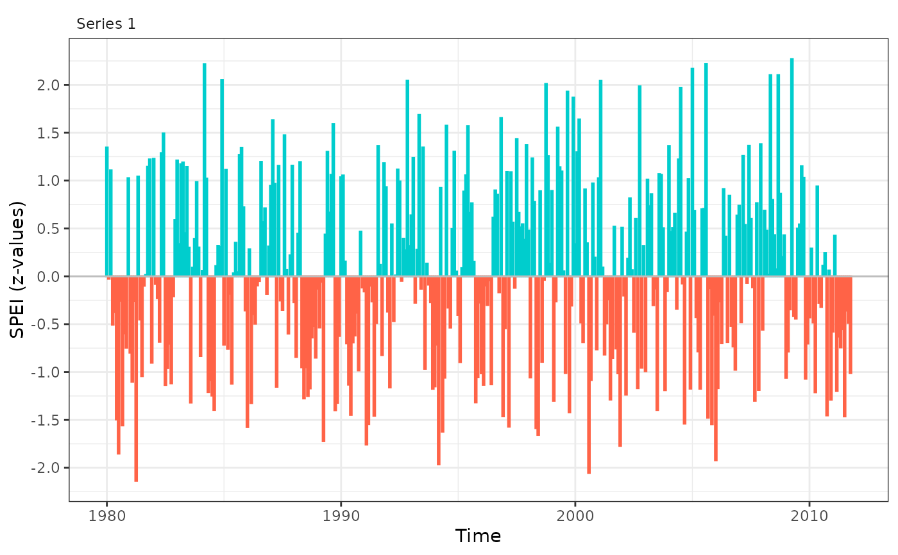
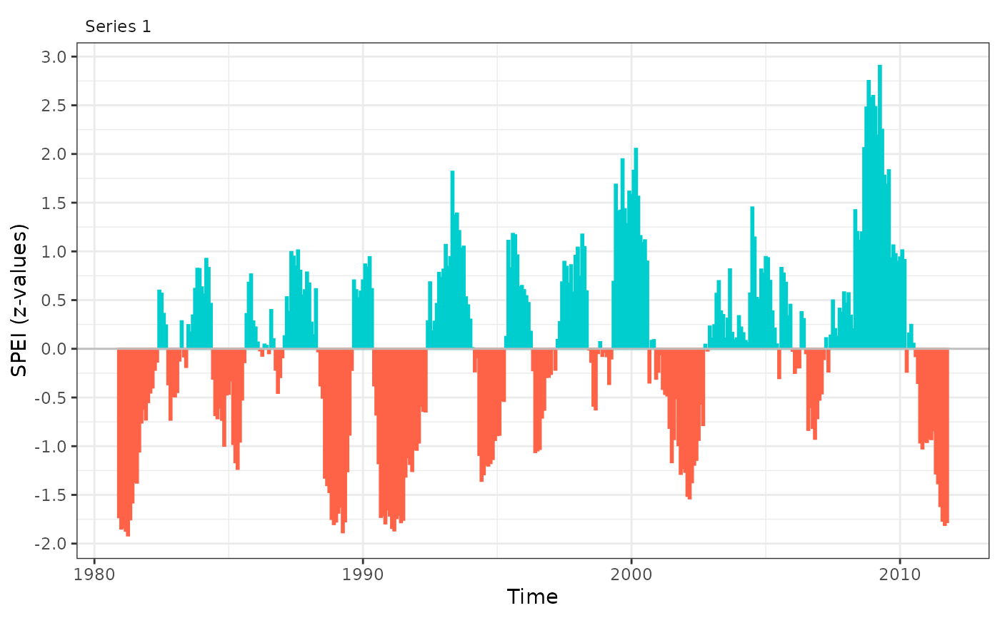
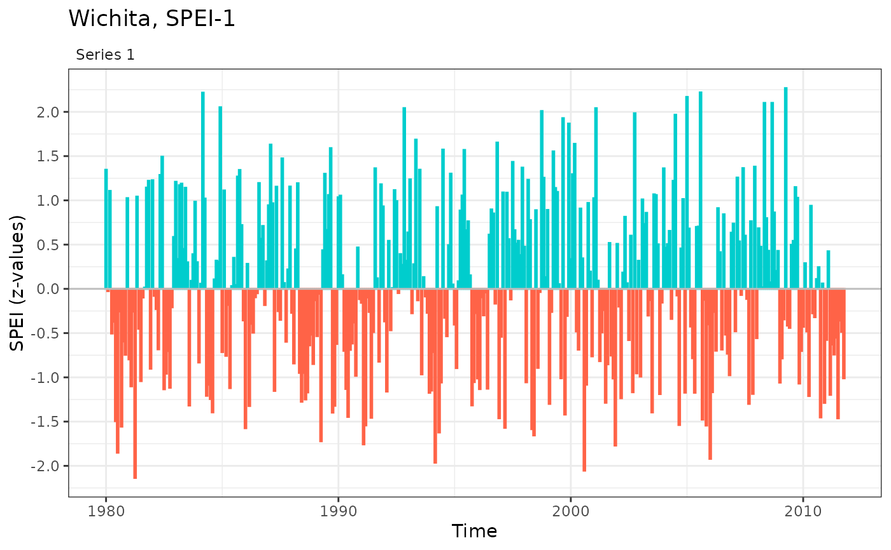
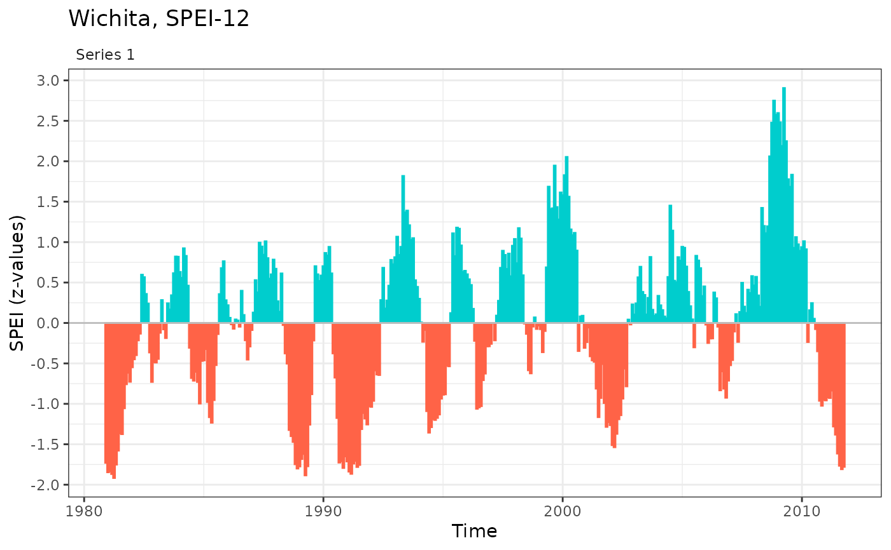
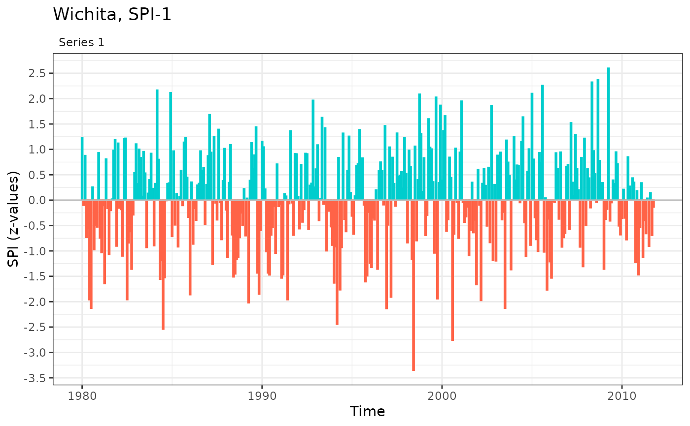
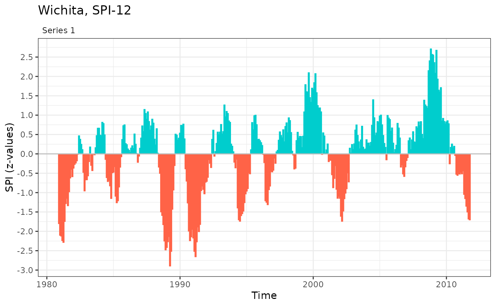
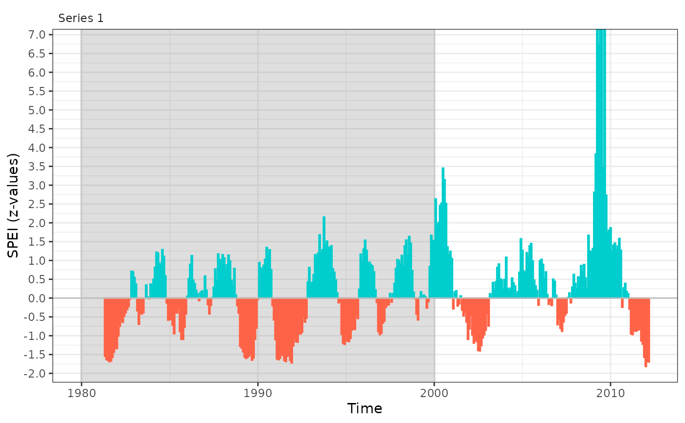
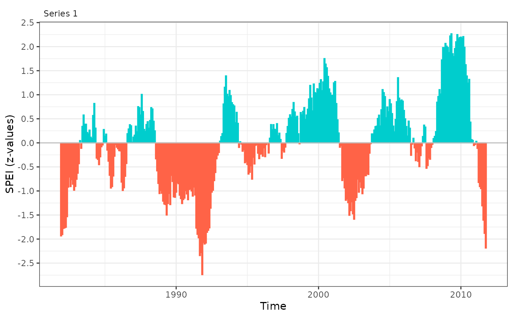
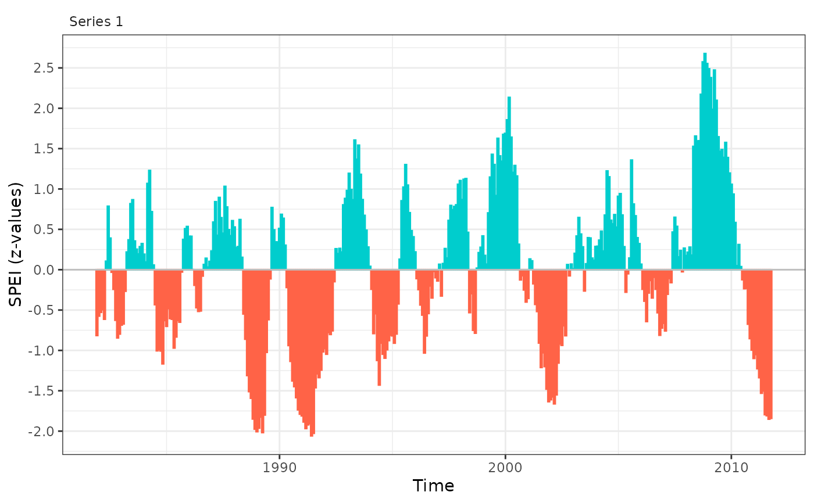

Calculation of the Standardized Precipitation-Evapotranspiration Index (SPEI) and the Standardized Precipitation Index (SPI).
Source:R/spei.R, R/spi.R
Drought-indices.RdGiven a time series of the climatic water balance (precipitation minus potential evapotranspiration), gives a time series of the Standardized Precipitation-Evapotranspiration Index (SPEI).
Usage
spei(
data,
scale,
kernel = list(type = 'rectangular', shift = 0),
distribution = 'log-Logistic',
fit = 'ub-pwm',
na.rm = FALSE,
ref.start=NULL,
ref.end=NULL,
keep.x=FALSE,
params=NULL,
verbose=TRUE,
...)
spi(
data,
scale,
kernel = list(type = 'rectangular', shift = 0),
distribution = 'Gamma',
fit = 'ub-pwm',
na.rm = FALSE,
ref.start=NULL,
ref.end=NULL,
keep.x=FALSE,
params=NULL,
verbose=TRUE,
...)
spi(
data,
scale,
kernel = list(type = "rectangular", shift = 0),
distribution = "Gamma",
fit = "ub-pwm",
na.rm = FALSE,
ref.start = NULL,
ref.end = NULL,
keep.x = FALSE,
params = NULL,
verbose = TRUE,
...
)Arguments
- data
a vector, matrix or data frame with time ordered values of precipitation (for the SPI) or of the climatic balance precipitation minus potential evapotranspiration (for the SPEI).
- scale
a positive integer, representing the time scale at which the SPEI / SPI will be computed. It can not be larger than the length of the series.
- kernel
optional, a list defining the type of kernel used for computing the SPEI / SPI at scales higher than one. Defaults to unshifted rectangular kernel.
- distribution
optional, name of the distribution function to be used for computing the SPEI / SPI (one of 'log-Logistic', 'Gamma' and 'PearsonIII'). Defaults to 'log-Logistic' for
spei, and to 'Gamma' forspi.- fit
optional, name of the method used for computing the distribution function parameters (one of 'ub-pwm', 'pp-pwm' and 'max-lik'). Defaults to 'ub-pwm'.
- na.rm
optional, a logical value indicating whether NA values should be stripped from the computations. Defaults to FALSE, i.e. no NA are allowed in the data.
- ref.start
optional, starting point of the reference period used for computing the index. Defaults to NULL, indicating that the first value in data will be used as starting point.
- ref.end
optional, ending point of the reference period used for computing the index. Defaults to NULL, indicating that the last value in data will be used as ending point.
- keep.x
optional, a logical value indicating whether the data used for fitting the model should be kept. Defaults to FALSE.
- params
optional, an array of parameters for computing the spei. This option overrides computation of fitting parameters.
- verbose
optional, logical, report the computation options during calculation. Either 'TRUE' (default) or 'FALSE'. The report is issued as a message, so it can also be silenced with
suppressMessages().- ...
not used.
Value
Functions spei and spi return an object of class spei.
The generic functions print and summary can be used to obtain
summaries of the results. The generic accessor functions coefficients
and fitted extract useful features of the object.
An object of class spei is a list containing at least the
following components:
call: the call to
speiorspiused to generate the object.fitted: time series with the values of the Standardized Precipitation-Evapotranspiration Index (SPEI) or the Standardized Precipitation Index (SPI). If data consists of several columns the function will treat each column as independent data, and the result will be a multivariate time series. The names of the columns in
datawill be used as column names in fitted.coefficients: an array with the values of the coefficients of the distribution function fitted to the data. The first dimension of the array contains the coefficients (xi, alpha, kappa for log-Logistic; alpha, beta, pze for Gamma; mu, sigma, gamma, pze for PearsonIII, where pze is the probability of zero in the reference period), the second dimension will be equal to the number of series in
data, and the third dimension will typically consist of twelve values corresponding to each month (or the frequency ofdata).scale: the
scaleparameter used to generate the object.kernel: the parameters and values of the kernel used to generate the object.
distribution: the distribution function used to generate the object.
fit: the fitting method used to generate the object.
na.action: the value of the na.action parameter used.
data: if requested, the input data used.
Details
The spei and spi functions allow computing the SPEI
and the SPI indices. These are climatic proxies widely used for drought
quantification and monitoring. Both functions are identical (in fact,
spi is just a wrapper for spei), but they are kept
separated for clarity. Basically, the functions standardize a variable
following a log-Logistic (or Gamma, or PearsonIII) distribution function
(i.e., they transform it to a standard Gaussian variate with zero mean
and standard deviation of one).
Input data
The input variable is a time ordered series of precipitation values
for spi, or a series of the climatic water balance (precipitation
minus potential evapotranspiration) for spei. When used with the
default options, it would yield values of both indices exactly as defined
in the references given below.
The SPEI and the SPI were defined for monthly data. Since the PDFs of the
data are not homogenous from month to month, the data is split into twelve
series (one for each month) and independent PDFs are fit to each series. If
data is a vector or a matrix it will be treated as a sequence of
monthly values starting in January. If it is a (univariate or multivariate)
time series then the function cycle will be used to determine
the position of each observation within the year (month), allowing the data
to start in a month other than January.
Time scales
An important advantage of the SPEI and the SPI is that they can be computed
at different time scales. This way it is possible to incorporate the
influence of the past values of the variable in the computation enabling
the index to adapt to the memory of the system under study. The magnitude of
this memory is controlled by parameter scale. For example, a value of
six would imply that data from the current month and of the past five months
will be used for computing the SPEI or SPI value for a given month. By
default all past data will have the same weight in computing the index, as
it was originally proposed in the references below. Other kernels, however,
are available through parameter kernel. The parameter kernel
is a list defining the shape of the kernel and a time shift. These
parameters are then passed to the function kern.
Probability distributions
Following the original definitions spei uses a log-Logistic
distribution by default, and spi uses a Gamma distribution. This
behavior can be modified, however, through parameter distribution.
The Gamma and PearsonIII distributions are fitted to positive values
only, and zeros are accounted for through the probability of zero (pze).
They are meant for non-negative data such as precipitation; negative
values (e.g. in a climatic water balance) produce a warning and get the
lowest possible index value.
Fitting methods
The default method for parameter fitting is based on unbiased Probability
Weighted Moments ('ub-pwm'), but other methods can be used through parameter
fit. A valid alternative is the plotting-position PWM ('pp-pwm')
method. For the log-Logistic distribution, also the maximum likelihood
method ('max-lik') is available, using the 'ub-pwm' estimates as starting
values. For the Gamma and PearsonIII distributions 'max-lik' is not
available, and 'ub-pwm' is used instead (with a warning).
User-provided parameters
An option exists to override parameter fitting and provide user default
parameters. This is activated with the parameter params. The exact
values provided to this parameter depend on the distribution function being
used. For log-Logistic it should be a three-dimensional array
with dimensions (3,number of series in data,12), containing twelve parameter
triads (xi, alpha, kappa) for each data series, one for each month. For
PearsonIII it should have dimensions (4,number of series in data,12),
containing the parameters (mu, sigma, gamma) and the probability of zero
(pze) estimated in the reference period. For Gamma, it should have
dimensions (3,number of series in data,12), containing the parameters
(alpha, beta) and pze. Arrays without the pze row (as produced by SPEI
versions before 1.9) are still accepted, but then pze is estimated from
data within the reference period, with a warning. It is a good
idea to look at the coefficients slot of a previously fit spei spei
object in order to understand the structure of the parameter array. The
parameter distribution is still used under this option in order to
know what distribution function should be used.
Reference period
The default behavior of the functions is using all the values provided in
data for parameter fitting. However, this can be modified with help
of parameters ref.start and ref.end. These parameters allow
defining a subset of values that will be used for parameter fitting, i.e.
a reference period. The functions, however, will compute the values of the
indices for the whole data set. For these options to work it is necessary
that data will be a time series object. The starting and ending
points of the reference period will then be defined as pairs of year and
month values, e.g. c(1900,1).
Processing large datasets
It is possible to use the spei and spi functions for
processing multivariate datasets at once. If a matrix or data frame is
supplied as data, with time series of precipitation or precipitation
minus potential evapotranspiration arranged in columns, the result would be
a matrix (data frame) of spi or spei series. This makes processing large
datasets extremely easy, since no loops need to be used.
References
S.M. Vicente-Serrano, S. Beguería, J.I. López-Moreno. 2010. A Multi-scalar drought index sensitive to global warming: The Standardized Precipitation Evapotranspiration Index – SPEI. Journal of Climate 23: 1696, DOI: 10.1175/2009JCLI2909.1.
S. Beguería, S.M Vicente-Serrano, F. Reig, B. Latorre. 2014. Standardized precipitation evapotranspiration index (SPEI) revisited: parameter fitting, evapotranspiration models, tools, datasets and drought monitoring. International Journal of Climatology 34(10): 3001-3023.
See also
kern for different kernel functions available.
thornthwaite,
hargreaves and penman for ways of calculating
potential evapotranspiration.
summary.spei and print.spei for summaries of
spei objects.
plot for plotting spei objects.
Examples
# \donttest{
# Load data
data(wichita)
# Compute potential evapotranspiration (PET) and climatic water
# balance (BAL).
wichita$PET <- thornthwaite(wichita$TMED, 37.6475)
#> Checking for missing values (`NA`): all the data must be complete. Input type is vector. Assuming the data are monthly time series starting in January, all regular (non-leap) years.
wichita$BAL <- wichita$PRCP - wichita$PET
# Convert to a ts (time series) for convenience
wichita <- ts(wichita[, -c(1, 2)], end = c(2011, 10), frequency = 12)
plot(wichita)

# One and twelve-months SPEI
spei1 <- spei(wichita[, "BAL"], 1)
#> Calculating the Standardized Precipitation Evapotranspiration Index (SPEI) at a time scale of 1. Using kernel type 'rectangular', with 0 shift. Fitting the data to a log-Logistic distribution. Using the ub-pwm parameter fitting method. Checking for missing values (`NA`): all the data must be complete. Using the whole time series as reference period. Input type is tsvector. Time series spanning Jan 1980 to Oct 2011, with frequency = 12.
spei12 <- spei(wichita[, "BAL"], 12)
#> Calculating the Standardized Precipitation Evapotranspiration Index (SPEI) at a time scale of 12. Using kernel type 'rectangular', with 0 shift. Fitting the data to a log-Logistic distribution. Using the ub-pwm parameter fitting method. Checking for missing values (`NA`): all the data must be complete. Using the whole time series as reference period. Input type is tsvector. Time series spanning Jan 1980 to Oct 2011, with frequency = 12.
class(spei1)
#> [1] "spei"
plot(spei1)

plot(spei12)

# Extract information from `spei` object: summary, call function,
# fitted values, and coefficients
summary(spei1)
#> Call:
#> spei(data = wichita[, "BAL"], scale = 1)
#>
#> Coefficients:
#> :
#> xi alpha kappa
#> 1 17.167735 9.985607 -0.18829083
#> 2 21.293028 14.156305 -0.16813492
#> 3 40.429189 23.042104 -0.15879217
#> 4 2.530350 26.244789 -0.23080875
#> 5 2.840736 35.884201 -0.22672953
#> 6 -14.809692 42.708187 0.02471367
#> 7 -95.355916 33.663263 0.03392509
#> 8 -75.013957 38.247347 -0.14189408
#> 9 -47.821904 30.833973 -0.37627226
#> 10 4.990441 28.876732 -0.23499547
#> 11 12.647701 16.094723 -0.24374511
#> 12 22.173064 12.513243 -0.30968009
#>
#> Fitted:
#> Jan Feb Mar Apr May
#> 1980 1.346596727 -0.026343615 1.107428985 -0.505556055 -0.372450517
#> 1981 -0.797558238 -1.102063774 -0.257530825 -2.136857646 1.042894683
#> 1982 1.228243820 -0.080205798 -0.229268404 -0.684098392 1.287938122
#> 1983 1.210578484 0.337642341 1.171751540 1.189702840 0.451597391
#> 1984 -0.833005361 0.058323367 2.217587018 1.021035994 -1.209251990
#> 1985 -0.715136907 1.112581569 -0.757385816 -0.182077129 -1.122194365
#> 1986 -1.575035169 0.283135267 -1.324404474 -0.396123888 -0.495694824
#> 1987 0.945082714 1.630467626 0.967932901 -1.154143376 1.155101640
#> 1988 -0.271488922 -0.843345131 0.446297966 1.194029141 -0.950590945
#> 1989 -0.129207737 -0.534918419 -0.056871297 -1.722769502 0.436613063
#> 1990 1.035207363 1.054121179 0.154873308 -0.700961862 -1.131936592
#> 1991 -0.158403156 -1.758066082 -1.543916829 -0.098052423 -0.261906072
#> 1992 -0.368508739 -1.161308948 0.543279711 -0.468183183 0.009329558
#> 1993 0.637881288 1.237562008 -0.276068640 0.278501096 1.686745053
#> 1994 -1.150249744 -0.714517567 -1.965083812 0.923903833 -1.623494357
#> 1995 -0.404281717 -0.896237147 0.086028019 0.885861175 1.055285253
#> 1996 -1.012998560 -1.133584822 -0.096356008 -0.300181575 -0.041218767
#> 1997 -0.541976440 1.089737473 -1.571276378 1.087606655 0.561840727
#> 1998 0.477599782 -1.056472276 1.233032103 0.776923685 -1.586049096
#> 1999 0.892362589 -1.300586739 -0.261481903 1.554162249 1.140572068
#> 2000 0.336516963 1.296179880 1.639512885 -0.482052918 -0.687751797
#> 2001 1.025208088 2.042441005 0.092882746 -0.817521482 -0.492686202
#> 2002 0.508834685 -0.201133539 -1.236656246 0.184496124 0.814812920
#> 2003 -0.991911986 1.011000868 0.733235955 0.859493469 -0.302084201
#> 2004 1.362516623 0.465028939 0.506163852 0.655443559 -0.340276704
#> 2005 2.169298512 0.682023434 -0.426485685 -0.784617690 -1.174683507
#> 2006 -1.921673625 -1.168511985 -0.260993860 -0.699493115 0.912382436
#> 2007 0.738087990 -0.479972912 1.258217430 0.537169293 -0.069353436
#> 2008 -0.557537436 0.684826589 0.476854864 0.017724029 2.101858713
#> 2009 -1.059938688 -0.786310115 -0.345759336 2.268997983 -0.416075244
#> 2010 -0.429255153 0.290375963 -0.482092206 -1.211716050 0.939269701
#> 2011 -0.577664411 0.425107902 -1.198664868 -0.629731852 -0.742767011
#> Jun Jul Aug Sep Oct
#> 1980 -1.495938588 -1.852302332 -0.256045728 -1.557802086 -0.595776894
#> 1981 -0.451874070 -1.043176124 -0.098933423 0.014671668 1.145052795
#> 1982 1.493733473 -1.135357371 -0.959134726 -0.703875819 -1.118190221
#> 1983 1.143194207 0.300775553 -1.319052924 0.091388169 0.391964730
#> 1984 -1.084411494 -1.246211972 -1.396180202 0.107352854 0.319414689
#> 1985 0.031822911 0.351182300 0.043533979 1.269536543 1.343842651
#> 1986 -0.095774952 -0.050298932 1.196282872 0.566715706 0.711093357
#> 1987 -0.252966226 -0.350880479 1.474742805 0.066043365 -0.598273802
#> 1988 -1.276165183 -0.950460703 -1.250645024 -1.171228274 -0.639479446
#> 1989 1.301050674 0.666261584 1.060723864 1.591006279 -1.399294062
#> 1990 -1.447769385 -0.690160057 -0.618213898 -0.380972407 -0.983367448
#> 1991 -1.457951858 -0.489275575 1.362958219 0.120005693 -0.823348998
#> 1992 1.116357995 0.992022067 -0.048193153 0.393585502 0.271946032
#> 1993 -0.129974812 1.346941355 -0.966609701 0.133352918 -0.086792725
#> 1994 -1.058614223 1.574271596 -0.327061700 -0.536005509 0.494637075
#> 1995 1.570248394 0.662923106 0.763881168 0.153277739 -1.317454511
#> 1996 -1.128421680 0.613564880 0.897999254 0.852832733 -0.167264388
#> 1997 -0.120154150 1.435104325 0.663115607 0.511130176 0.544286434
#> 1998 -1.656740828 0.889456522 -0.893753895 -0.036856824 2.009939855
#> 1999 1.095900881 0.053272458 -1.011033198 1.929683246 -1.421166186
#> 2000 0.908185521 0.345313935 -2.054821302 -1.083830589 0.971137750
#> 2001 -0.239804560 -1.287937954 -0.853268745 0.518977053 -0.754301061
#> 2002 0.063915463 -0.579386762 0.601652150 -1.169034392 1.985010956
#> 2003 -0.127516093 -1.396868622 1.068544468 1.060568703 0.503625423
#> 2004 1.221606328 1.967748932 -0.075217663 -1.539090249 0.457133582
#> 2005 0.700391801 0.704442848 2.220367087 -1.478030977 -0.124490457
#> 2006 0.415019221 -0.686559004 0.843358286 -0.517901142 -0.733238297
#> 2007 1.364903528 0.601768743 -0.114579555 -1.300438374 0.764847086
#> 2008 0.799174500 0.430891072 0.074250496 2.102074456 0.863640792
#> 2009 -0.441986680 0.498832355 0.542915207 1.150155891 1.030073270
#> 2010 -0.277085868 -0.321008460 0.111627258 0.245416922 -1.453278170
#> 2011 -0.552169271 -1.463579778 -0.358950406 -0.486552270 -1.011470767
#> Nov Dec
#> 1980 -0.745837912 1.026014802
#> 1981 1.221777541 -0.903279396
#> 1982 -0.209323838 0.587051767
#> 1983 0.985749232 0.301753020
#> 1984 0.306887926 2.052843034
#> 1985 0.721418061 -0.357185800
#> 1986 -0.183471926 0.311776494
#> 1987 0.220178183 1.156582510
#> 1988 -0.518425242 -0.849887500
#> 1989 -1.322275222 -0.623291683
#> 1990 0.467857589 -0.117088048
#> 1991 1.182169816 0.932326511
#> 1992 2.043210892 0.317655853
#> 1993 -0.271479273 -1.175237354
#> 1994 1.302706514 0.050081522
#> 1995 -1.054564326 -0.274510378
#> 1996 1.653884773 -1.462823364
#> 1997 0.382253998 1.370537684
#> 1998 1.256016178 0.132576528
#> 1999 -0.306222116 1.868235792
#> 2000 0.195688965 -0.763334878
#> 2001 -1.013539385 -1.771399999
#> 2002 -0.955443681 0.318208761
#> 2003 -1.189663549 -0.155817664
#> 2004 1.015157835 -1.173703044
#> 2005 -1.545296696 -0.401658318
#> 2006 -0.976588096 0.635701714
#> 2007 -1.187620667 1.381565450
#> 2008 0.202738738 0.429393065
#> 2009 -1.070596493 -0.702475839
#> 2010 0.061292852 -1.289274857
#> 2011
names(spei1)
#> [1] "call" "info" "fitted" "coefficients" "scale"
#> [6] "kernel" "distribution" "fit" "na.action" "index"
spei1$call
#> spei(data = wichita[, "BAL"], scale = 1)
spei1$fitted
#> Jan Feb Mar Apr May
#> 1980 1.346596727 -0.026343615 1.107428985 -0.505556055 -0.372450517
#> 1981 -0.797558238 -1.102063774 -0.257530825 -2.136857646 1.042894683
#> 1982 1.228243820 -0.080205798 -0.229268404 -0.684098392 1.287938122
#> 1983 1.210578484 0.337642341 1.171751540 1.189702840 0.451597391
#> 1984 -0.833005361 0.058323367 2.217587018 1.021035994 -1.209251990
#> 1985 -0.715136907 1.112581569 -0.757385816 -0.182077129 -1.122194365
#> 1986 -1.575035169 0.283135267 -1.324404474 -0.396123888 -0.495694824
#> 1987 0.945082714 1.630467626 0.967932901 -1.154143376 1.155101640
#> 1988 -0.271488922 -0.843345131 0.446297966 1.194029141 -0.950590945
#> 1989 -0.129207737 -0.534918419 -0.056871297 -1.722769502 0.436613063
#> 1990 1.035207363 1.054121179 0.154873308 -0.700961862 -1.131936592
#> 1991 -0.158403156 -1.758066082 -1.543916829 -0.098052423 -0.261906072
#> 1992 -0.368508739 -1.161308948 0.543279711 -0.468183183 0.009329558
#> 1993 0.637881288 1.237562008 -0.276068640 0.278501096 1.686745053
#> 1994 -1.150249744 -0.714517567 -1.965083812 0.923903833 -1.623494357
#> 1995 -0.404281717 -0.896237147 0.086028019 0.885861175 1.055285253
#> 1996 -1.012998560 -1.133584822 -0.096356008 -0.300181575 -0.041218767
#> 1997 -0.541976440 1.089737473 -1.571276378 1.087606655 0.561840727
#> 1998 0.477599782 -1.056472276 1.233032103 0.776923685 -1.586049096
#> 1999 0.892362589 -1.300586739 -0.261481903 1.554162249 1.140572068
#> 2000 0.336516963 1.296179880 1.639512885 -0.482052918 -0.687751797
#> 2001 1.025208088 2.042441005 0.092882746 -0.817521482 -0.492686202
#> 2002 0.508834685 -0.201133539 -1.236656246 0.184496124 0.814812920
#> 2003 -0.991911986 1.011000868 0.733235955 0.859493469 -0.302084201
#> 2004 1.362516623 0.465028939 0.506163852 0.655443559 -0.340276704
#> 2005 2.169298512 0.682023434 -0.426485685 -0.784617690 -1.174683507
#> 2006 -1.921673625 -1.168511985 -0.260993860 -0.699493115 0.912382436
#> 2007 0.738087990 -0.479972912 1.258217430 0.537169293 -0.069353436
#> 2008 -0.557537436 0.684826589 0.476854864 0.017724029 2.101858713
#> 2009 -1.059938688 -0.786310115 -0.345759336 2.268997983 -0.416075244
#> 2010 -0.429255153 0.290375963 -0.482092206 -1.211716050 0.939269701
#> 2011 -0.577664411 0.425107902 -1.198664868 -0.629731852 -0.742767011
#> Jun Jul Aug Sep Oct
#> 1980 -1.495938588 -1.852302332 -0.256045728 -1.557802086 -0.595776894
#> 1981 -0.451874070 -1.043176124 -0.098933423 0.014671668 1.145052795
#> 1982 1.493733473 -1.135357371 -0.959134726 -0.703875819 -1.118190221
#> 1983 1.143194207 0.300775553 -1.319052924 0.091388169 0.391964730
#> 1984 -1.084411494 -1.246211972 -1.396180202 0.107352854 0.319414689
#> 1985 0.031822911 0.351182300 0.043533979 1.269536543 1.343842651
#> 1986 -0.095774952 -0.050298932 1.196282872 0.566715706 0.711093357
#> 1987 -0.252966226 -0.350880479 1.474742805 0.066043365 -0.598273802
#> 1988 -1.276165183 -0.950460703 -1.250645024 -1.171228274 -0.639479446
#> 1989 1.301050674 0.666261584 1.060723864 1.591006279 -1.399294062
#> 1990 -1.447769385 -0.690160057 -0.618213898 -0.380972407 -0.983367448
#> 1991 -1.457951858 -0.489275575 1.362958219 0.120005693 -0.823348998
#> 1992 1.116357995 0.992022067 -0.048193153 0.393585502 0.271946032
#> 1993 -0.129974812 1.346941355 -0.966609701 0.133352918 -0.086792725
#> 1994 -1.058614223 1.574271596 -0.327061700 -0.536005509 0.494637075
#> 1995 1.570248394 0.662923106 0.763881168 0.153277739 -1.317454511
#> 1996 -1.128421680 0.613564880 0.897999254 0.852832733 -0.167264388
#> 1997 -0.120154150 1.435104325 0.663115607 0.511130176 0.544286434
#> 1998 -1.656740828 0.889456522 -0.893753895 -0.036856824 2.009939855
#> 1999 1.095900881 0.053272458 -1.011033198 1.929683246 -1.421166186
#> 2000 0.908185521 0.345313935 -2.054821302 -1.083830589 0.971137750
#> 2001 -0.239804560 -1.287937954 -0.853268745 0.518977053 -0.754301061
#> 2002 0.063915463 -0.579386762 0.601652150 -1.169034392 1.985010956
#> 2003 -0.127516093 -1.396868622 1.068544468 1.060568703 0.503625423
#> 2004 1.221606328 1.967748932 -0.075217663 -1.539090249 0.457133582
#> 2005 0.700391801 0.704442848 2.220367087 -1.478030977 -0.124490457
#> 2006 0.415019221 -0.686559004 0.843358286 -0.517901142 -0.733238297
#> 2007 1.364903528 0.601768743 -0.114579555 -1.300438374 0.764847086
#> 2008 0.799174500 0.430891072 0.074250496 2.102074456 0.863640792
#> 2009 -0.441986680 0.498832355 0.542915207 1.150155891 1.030073270
#> 2010 -0.277085868 -0.321008460 0.111627258 0.245416922 -1.453278170
#> 2011 -0.552169271 -1.463579778 -0.358950406 -0.486552270 -1.011470767
#> Nov Dec
#> 1980 -0.745837912 1.026014802
#> 1981 1.221777541 -0.903279396
#> 1982 -0.209323838 0.587051767
#> 1983 0.985749232 0.301753020
#> 1984 0.306887926 2.052843034
#> 1985 0.721418061 -0.357185800
#> 1986 -0.183471926 0.311776494
#> 1987 0.220178183 1.156582510
#> 1988 -0.518425242 -0.849887500
#> 1989 -1.322275222 -0.623291683
#> 1990 0.467857589 -0.117088048
#> 1991 1.182169816 0.932326511
#> 1992 2.043210892 0.317655853
#> 1993 -0.271479273 -1.175237354
#> 1994 1.302706514 0.050081522
#> 1995 -1.054564326 -0.274510378
#> 1996 1.653884773 -1.462823364
#> 1997 0.382253998 1.370537684
#> 1998 1.256016178 0.132576528
#> 1999 -0.306222116 1.868235792
#> 2000 0.195688965 -0.763334878
#> 2001 -1.013539385 -1.771399999
#> 2002 -0.955443681 0.318208761
#> 2003 -1.189663549 -0.155817664
#> 2004 1.015157835 -1.173703044
#> 2005 -1.545296696 -0.401658318
#> 2006 -0.976588096 0.635701714
#> 2007 -1.187620667 1.381565450
#> 2008 0.202738738 0.429393065
#> 2009 -1.070596493 -0.702475839
#> 2010 0.061292852 -1.289274857
#> 2011
spei1$coefficients
#> , , 1
#>
#>
#> par [,1]
#> xi 17.1677346
#> alpha 9.9856074
#> kappa -0.1882908
#>
#> , , 2
#>
#>
#> par [,1]
#> xi 21.2930279
#> alpha 14.1563050
#> kappa -0.1681349
#>
#> , , 3
#>
#>
#> par [,1]
#> xi 40.4291886
#> alpha 23.0421038
#> kappa -0.1587922
#>
#> , , 4
#>
#>
#> par [,1]
#> xi 2.5303499
#> alpha 26.2447892
#> kappa -0.2308087
#>
#> , , 5
#>
#>
#> par [,1]
#> xi 2.8407357
#> alpha 35.8842010
#> kappa -0.2267295
#>
#> , , 6
#>
#>
#> par [,1]
#> xi -14.80969186
#> alpha 42.70818660
#> kappa 0.02471367
#>
#> , , 7
#>
#>
#> par [,1]
#> xi -95.35591584
#> alpha 33.66326251
#> kappa 0.03392509
#>
#> , , 8
#>
#>
#> par [,1]
#> xi -75.0139570
#> alpha 38.2473469
#> kappa -0.1418941
#>
#> , , 9
#>
#>
#> par [,1]
#> xi -47.8219044
#> alpha 30.8339732
#> kappa -0.3762723
#>
#> , , 10
#>
#>
#> par [,1]
#> xi 4.9904415
#> alpha 28.8767318
#> kappa -0.2349955
#>
#> , , 11
#>
#>
#> par [,1]
#> xi 12.6477007
#> alpha 16.0947226
#> kappa -0.2437451
#>
#> , , 12
#>
#>
#> par [,1]
#> xi 22.1730643
#> alpha 12.5132427
#> kappa -0.3096801
#>
# Plot `spei` object
par(mfrow = c(2, 1))
plot(spei1, main = "Wichita, SPEI-1")

plot(spei12, main = "Wichita, SPEI-12")

# One and tvelwe-months SPI
spi_1 <- spi(wichita[, "PRCP"], 1)
#> Calculating the Standardized Precipitation Index (SPI) at a time scale of 1. Using kernel type 'rectangular', with 0 shift. Fitting the data to a Gamma distribution. Using the ub-pwm parameter fitting method. Checking for missing values (`NA`): all the data must be complete. Using the whole time series as reference period. Input type is tsvector. Time series spanning Jan 1980 to Oct 2011, with frequency = 12.
spi_12 <- spi(wichita[, "PRCP"], 12)
#> Calculating the Standardized Precipitation Index (SPI) at a time scale of 12. Using kernel type 'rectangular', with 0 shift. Fitting the data to a Gamma distribution. Using the ub-pwm parameter fitting method. Checking for missing values (`NA`): all the data must be complete. Using the whole time series as reference period. Input type is tsvector. Time series spanning Jan 1980 to Oct 2011, with frequency = 12.
par(mfrow = c(2, 1))
plot(spi_1, main = "Wichita, SPI-1")

plot(spi_12, main = "Wichita, SPI-12")

# Time series not starting in January
plot(spei(ts(wichita[, "BAL"], freq = 12, start = c(1980, 6)), 12))
#> Calculating the Standardized Precipitation Evapotranspiration Index (SPEI) at a time scale of 12. Using kernel type 'rectangular', with 0 shift. Fitting the data to a log-Logistic distribution. Using the ub-pwm parameter fitting method. Checking for missing values (`NA`): all the data must be complete. Using the whole time series as reference period. Input type is tsvector. Time series spanning Jun 1980 to Mar 2012, with frequency = 12.
# Using a particular reference period (1980-2000) for computing the
# parameters. This may result in unexpected values (Inf, NaN) if data
# outside the reference period are way higher or lower than those within
# the reference period.
plot(spei(ts(wichita[, "BAL"], freq = 12, start = c(1980, 6)), 12,
ref.start = c(1980, 1), ref.end = c(2000, 1)
))
#> Calculating the Standardized Precipitation Evapotranspiration Index (SPEI) at a time scale of 12. Using kernel type 'rectangular', with 0 shift. Fitting the data to a log-Logistic distribution. Using the ub-pwm parameter fitting method. Checking for missing values (`NA`): all the data must be complete. Using a user-specified reference period. Input type is tsvector. Time series spanning Jun 1980 to Mar 2012, with frequency = 12.

# Using different kernels
spei24 <- spei(wichita[, "BAL"], 24)
#> Calculating the Standardized Precipitation Evapotranspiration Index (SPEI) at a time scale of 24. Using kernel type 'rectangular', with 0 shift. Fitting the data to a log-Logistic distribution. Using the ub-pwm parameter fitting method. Checking for missing values (`NA`): all the data must be complete. Using the whole time series as reference period. Input type is tsvector. Time series spanning Jan 1980 to Oct 2011, with frequency = 12.
spei24_gau <- spei(wichita[, "BAL"], 24,
kernel = list(type = "gaussian", shift = 0)
)
#> Calculating the Standardized Precipitation Evapotranspiration Index (SPEI) at a time scale of 24. Using kernel type 'gaussian', with 0 shift. Fitting the data to a log-Logistic distribution. Using the ub-pwm parameter fitting method. Checking for missing values (`NA`): all the data must be complete. Using the whole time series as reference period. Input type is tsvector. Time series spanning Jan 1980 to Oct 2011, with frequency = 12.
par(mfrow = c(2, 1))
plot(spei24)

plot(spei24_gau)

dev.off()
#> null device
#> 1
# Using different methods (distributions)
spi_gam <- spi(wichita[, "PRCP"], 12, distribution = "Gamma")
#> Calculating the Standardized Precipitation Index (SPI) at a time scale of 12. Using kernel type 'rectangular', with 0 shift. Fitting the data to a Gamma distribution. Using the ub-pwm parameter fitting method. Checking for missing values (`NA`): all the data must be complete. Using the whole time series as reference period. Input type is tsvector. Time series spanning Jan 1980 to Oct 2011, with frequency = 12.
spi_pe3 <- spi(wichita[, "PRCP"], 12, distribution = "PearsonIII")
#> Calculating the Standardized Precipitation Index (SPI) at a time scale of 12. Using kernel type 'rectangular', with 0 shift. Fitting the data to a PearsonIII distribution. Using the ub-pwm parameter fitting method. Checking for missing values (`NA`): all the data must be complete. Using the whole time series as reference period. Input type is tsvector. Time series spanning Jan 1980 to Oct 2011, with frequency = 12.
plot(spi_gam$fitted, spi_pe3$fitted)
grid()
# Using custom (user provided) parameters
coe <- spei1$coefficients
dim(coe)
#> [1] 3 1 12
spei(wichita[, "BAL"], 1, params = coe)
#> Calculating the Standardized Precipitation Evapotranspiration Index (SPEI) at a time scale of 1. Using kernel type 'rectangular', with 0 shift. Using the log-Logistic distribution with user-specified distribution parameters. Checking for missing values (`NA`): all the data must be complete. Using the whole time series as reference period. Input type is tsvector. Time series spanning Jan 1980 to Oct 2011, with frequency = 12.
#> Jan Feb Mar Apr May
#> 1980 1.346596727 -0.026343615 1.107428985 -0.505556055 -0.372450517
#> 1981 -0.797558238 -1.102063774 -0.257530825 -2.136857646 1.042894683
#> 1982 1.228243820 -0.080205798 -0.229268404 -0.684098392 1.287938122
#> 1983 1.210578484 0.337642341 1.171751540 1.189702840 0.451597391
#> 1984 -0.833005361 0.058323367 2.217587018 1.021035994 -1.209251990
#> 1985 -0.715136907 1.112581569 -0.757385816 -0.182077129 -1.122194365
#> 1986 -1.575035169 0.283135267 -1.324404474 -0.396123888 -0.495694824
#> 1987 0.945082714 1.630467626 0.967932901 -1.154143376 1.155101640
#> 1988 -0.271488922 -0.843345131 0.446297966 1.194029141 -0.950590945
#> 1989 -0.129207737 -0.534918419 -0.056871297 -1.722769502 0.436613063
#> 1990 1.035207363 1.054121179 0.154873308 -0.700961862 -1.131936592
#> 1991 -0.158403156 -1.758066082 -1.543916829 -0.098052423 -0.261906072
#> 1992 -0.368508739 -1.161308948 0.543279711 -0.468183183 0.009329558
#> 1993 0.637881288 1.237562008 -0.276068640 0.278501096 1.686745053
#> 1994 -1.150249744 -0.714517567 -1.965083812 0.923903833 -1.623494357
#> 1995 -0.404281717 -0.896237147 0.086028019 0.885861175 1.055285253
#> 1996 -1.012998560 -1.133584822 -0.096356008 -0.300181575 -0.041218767
#> 1997 -0.541976440 1.089737473 -1.571276378 1.087606655 0.561840727
#> 1998 0.477599782 -1.056472276 1.233032103 0.776923685 -1.586049096
#> 1999 0.892362589 -1.300586739 -0.261481903 1.554162249 1.140572068
#> 2000 0.336516963 1.296179880 1.639512885 -0.482052918 -0.687751797
#> 2001 1.025208088 2.042441005 0.092882746 -0.817521482 -0.492686202
#> 2002 0.508834685 -0.201133539 -1.236656246 0.184496124 0.814812920
#> 2003 -0.991911986 1.011000868 0.733235955 0.859493469 -0.302084201
#> 2004 1.362516623 0.465028939 0.506163852 0.655443559 -0.340276704
#> 2005 2.169298512 0.682023434 -0.426485685 -0.784617690 -1.174683507
#> 2006 -1.921673625 -1.168511985 -0.260993860 -0.699493115 0.912382436
#> 2007 0.738087990 -0.479972912 1.258217430 0.537169293 -0.069353436
#> 2008 -0.557537436 0.684826589 0.476854864 0.017724029 2.101858713
#> 2009 -1.059938688 -0.786310115 -0.345759336 2.268997983 -0.416075244
#> 2010 -0.429255153 0.290375963 -0.482092206 -1.211716050 0.939269701
#> 2011 -0.577664411 0.425107902 -1.198664868 -0.629731852 -0.742767011
#> Jun Jul Aug Sep Oct
#> 1980 -1.495938588 -1.852302332 -0.256045728 -1.557802086 -0.595776894
#> 1981 -0.451874070 -1.043176124 -0.098933423 0.014671668 1.145052795
#> 1982 1.493733473 -1.135357371 -0.959134726 -0.703875819 -1.118190221
#> 1983 1.143194207 0.300775553 -1.319052924 0.091388169 0.391964730
#> 1984 -1.084411494 -1.246211972 -1.396180202 0.107352854 0.319414689
#> 1985 0.031822911 0.351182300 0.043533979 1.269536543 1.343842651
#> 1986 -0.095774952 -0.050298932 1.196282872 0.566715706 0.711093357
#> 1987 -0.252966226 -0.350880479 1.474742805 0.066043365 -0.598273802
#> 1988 -1.276165183 -0.950460703 -1.250645024 -1.171228274 -0.639479446
#> 1989 1.301050674 0.666261584 1.060723864 1.591006279 -1.399294062
#> 1990 -1.447769385 -0.690160057 -0.618213898 -0.380972407 -0.983367448
#> 1991 -1.457951858 -0.489275575 1.362958219 0.120005693 -0.823348998
#> 1992 1.116357995 0.992022067 -0.048193153 0.393585502 0.271946032
#> 1993 -0.129974812 1.346941355 -0.966609701 0.133352918 -0.086792725
#> 1994 -1.058614223 1.574271596 -0.327061700 -0.536005509 0.494637075
#> 1995 1.570248394 0.662923106 0.763881168 0.153277739 -1.317454511
#> 1996 -1.128421680 0.613564880 0.897999254 0.852832733 -0.167264388
#> 1997 -0.120154150 1.435104325 0.663115607 0.511130176 0.544286434
#> 1998 -1.656740828 0.889456522 -0.893753895 -0.036856824 2.009939855
#> 1999 1.095900881 0.053272458 -1.011033198 1.929683246 -1.421166186
#> 2000 0.908185521 0.345313935 -2.054821302 -1.083830589 0.971137750
#> 2001 -0.239804560 -1.287937954 -0.853268745 0.518977053 -0.754301061
#> 2002 0.063915463 -0.579386762 0.601652150 -1.169034392 1.985010956
#> 2003 -0.127516093 -1.396868622 1.068544468 1.060568703 0.503625423
#> 2004 1.221606328 1.967748932 -0.075217663 -1.539090249 0.457133582
#> 2005 0.700391801 0.704442848 2.220367087 -1.478030977 -0.124490457
#> 2006 0.415019221 -0.686559004 0.843358286 -0.517901142 -0.733238297
#> 2007 1.364903528 0.601768743 -0.114579555 -1.300438374 0.764847086
#> 2008 0.799174500 0.430891072 0.074250496 2.102074456 0.863640792
#> 2009 -0.441986680 0.498832355 0.542915207 1.150155891 1.030073270
#> 2010 -0.277085868 -0.321008460 0.111627258 0.245416922 -1.453278170
#> 2011 -0.552169271 -1.463579778 -0.358950406 -0.486552270 -1.011470767
#> Nov Dec
#> 1980 -0.745837912 1.026014802
#> 1981 1.221777541 -0.903279396
#> 1982 -0.209323838 0.587051767
#> 1983 0.985749232 0.301753020
#> 1984 0.306887926 2.052843034
#> 1985 0.721418061 -0.357185800
#> 1986 -0.183471926 0.311776494
#> 1987 0.220178183 1.156582510
#> 1988 -0.518425242 -0.849887500
#> 1989 -1.322275222 -0.623291683
#> 1990 0.467857589 -0.117088048
#> 1991 1.182169816 0.932326511
#> 1992 2.043210892 0.317655853
#> 1993 -0.271479273 -1.175237354
#> 1994 1.302706514 0.050081522
#> 1995 -1.054564326 -0.274510378
#> 1996 1.653884773 -1.462823364
#> 1997 0.382253998 1.370537684
#> 1998 1.256016178 0.132576528
#> 1999 -0.306222116 1.868235792
#> 2000 0.195688965 -0.763334878
#> 2001 -1.013539385 -1.771399999
#> 2002 -0.955443681 0.318208761
#> 2003 -1.189663549 -0.155817664
#> 2004 1.015157835 -1.173703044
#> 2005 -1.545296696 -0.401658318
#> 2006 -0.976588096 0.635701714
#> 2007 -1.187620667 1.381565450
#> 2008 0.202738738 0.429393065
#> 2009 -1.070596493 -0.702475839
#> 2010 0.061292852 -1.289274857
#> 2011
# Matrix input (computing data from several stations at one)
# Dataset `balance` contains time series of the climatic water balance at
# 12 locations. Note that input must be provided as matrix.
data(balance)
head(balance)
#> indore kimberley albuquerque valencia viena abashiri tampa sao_paulo
#> 1 -25.73 -84.70 11.97 -11.78 127.34 26.10 90.04 104.04
#> 2 -52.71 -80.69 2.12 -8.08 26.36 19.40 79.78 73.40
#> 3 -119.63 16.37 -20.23 24.74 119.28 17.70 146.62 76.11
#> 4 -199.76 -21.87 -21.63 -16.15 49.37 11.40 28.46 43.76
#> 5 -249.20 -46.18 -50.39 -30.37 18.63 30.05 -40.48 93.72
#> 6 -210.47 -5.66 -102.92 -47.62 5.20 54.85 77.86 -1.62
#> lahore punta_arenas helsinki
#> 1 3.61 -33.61 56.00
#> 2 -9.28 -6.71 82.00
#> 3 -71.45 -50.41 45.00
#> 4 -98.52 -15.00 44.08
#> 5 -230.38 -8.47 3.08
#> 6 -354.94 -2.27 -19.67
bal_spei12 <- spei(as.matrix(balance), 12)
#> Calculating the Standardized Precipitation Evapotranspiration Index (SPEI) at a time scale of 12. Using kernel type 'rectangular', with 0 shift. Fitting the data to a log-Logistic distribution. Using the ub-pwm parameter fitting method. Checking for missing values (`NA`): all the data must be complete. Using the whole time series as reference period. Input type is matrix. No time information provided, assuming a monthly time series.
plot(bal_spei12)
#> Warning: Maximum allowed sites is ten. Plotting the first ten sites in the data.
# 3-d array input (computing data from a gridded spatio-temporal dataset)
# Dataset cruts4 contains monthly time series of the climatic water balance
# at six locations, in a gridded format (3-d array).
data(cruts4)
dim(cruts4)
#> [1] 1440 2 3
spei_12 <- spei(cruts4, 12)
#> Calculating the Standardized Precipitation Evapotranspiration Index (SPEI) at a time scale of 12. Using kernel type 'rectangular', with 0 shift. Fitting the data to a log-Logistic distribution. Using the ub-pwm parameter fitting method. Checking for missing values (`NA`): all the data must be complete. Using the whole time series as reference period. Input type is array. No time information provided, assuming a monthly time series.
dim(spei_12$fitted)
#> [1] 1440 2 3
# Modding the plot
# Since plot.spei() returns a ggplot object, it is possible to add or tweak
# parts of the plot.
require(ggplot2)
#> Loading required package: ggplot2
plot(spei(wichita[, "BAL"], 12)) +
ggtitle("SPEI1 at Wichita") +
scale_fill_manual(values = c("blue", "red")) + # classic SPEI look
scale_color_manual(values = c("blue", "red")) + # classic SPEI look
theme_classic() +
theme(legend.position = "bottom")
#> Calculating the Standardized Precipitation Evapotranspiration Index (SPEI) at a time scale of 12. Using kernel type 'rectangular', with 0 shift. Fitting the data to a log-Logistic distribution. Using the ub-pwm parameter fitting method. Checking for missing values (`NA`): all the data must be complete. Using the whole time series as reference period. Input type is tsvector. Time series spanning Jan 1980 to Oct 2011, with frequency = 12.
#> Scale for fill is already present.
#> Adding another scale for fill, which will replace the existing scale.
#> Scale for colour is already present.
#> Adding another scale for colour, which will replace the existing scale.
# }